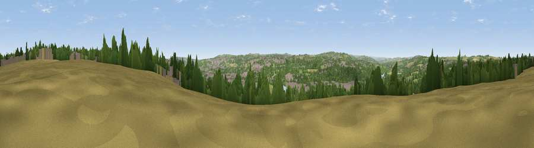

Viewpoint near Blucher
#17827 in England · top 37% of its area beats it · near BlucherWhere it is
The exact computed spot (NZ 17875 65725). Click the marker for map links.
The view, rendered

A 360° render of this exact spot computed from the terrain model, tree cover and land cover — summer colours, afternoon light, calibrated against photographs of famous viewpoints. Real trees, hedges and buildings will differ in detail.
The panorama
Grey silhouette: terrain skyline in each direction (720 bearings, Earth curvature and refraction included). Dashed green: skyline with trees (+15 m) and buildings (+8 m) as obstacles. Blue strip: how far the ground is visible on each bearing.
Where the view opens
Wedge length = distance to the farthest visible ground on that bearing (vegetation-aware). Rings at 10, 25 and 50 km.
What fills the view
34% woodland · 27% built-up · 25% grassland · 11% cropland · 3% water
Angular shares of the visible panorama (visual magnitude), not map area. Landscape diversity 0.62 (0–1 Shannon).
Key numbers
More beautiful places nearby
The staircase of upgrades: each row has a higher view potential than everything closer. Driving times are estimates from straight-line distance, calibrated against real road routing — check an actual route before setting out.
| Place | Direction | Drive | Score |
|---|---|---|---|
| Viewpoint near Swalwell | ESE · 4 km | ~9 min | 55.6 |
| Heddon Common | WNW · 5 km | ~11 min | 56.8 |
| Heddon Laws | NW · 5 km | ~12 min | 57.5 |
| Viewpoint near Greenside | SW · 7 km | ~15 min | 74.2 |
| Viewpoint near Burnopfield | S · 8 km | ~16 min | 75.4 |
| Viewpoint near Sunniside | SSE · 9 km | ~18 min | 77.6 |
| Pontop Pike | SSW · 13 km | ~24 min | 77.8 |
| Viewpoint near Rothbury | NNW · 35 km | ~54 min | 81.1 |
54.98580, -1.72220 · source: screening · position refined by local search. Computed location — check access rights before visiting.